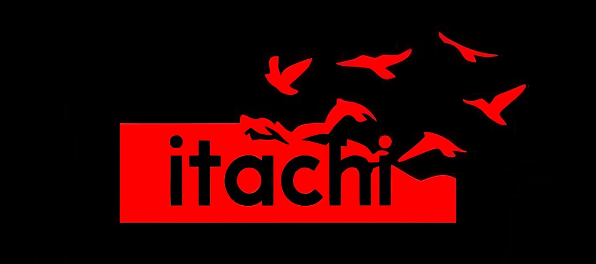
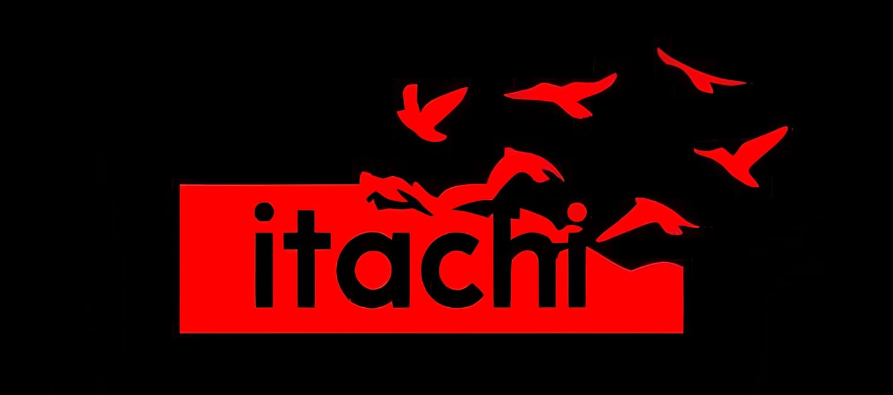

About Itachi Sharingan
Itachi Uchiha's Sharingan is a powerful dōjutsu
that grants him incredible visual prowess,
including heightened perception and genjutsu abilities.
it, he can cast the Tsukuyomi, a powerful illusion
technique that manipulates time and perception.
His Sharingan evolves into the Mangekyō Sharingan,
unlocking even more powerful techniques
like Amaterasu and Susanoo. Itachi's mastery
of the Sharingan makes him
one of the most formidable shinobi
in the Naruto universe.